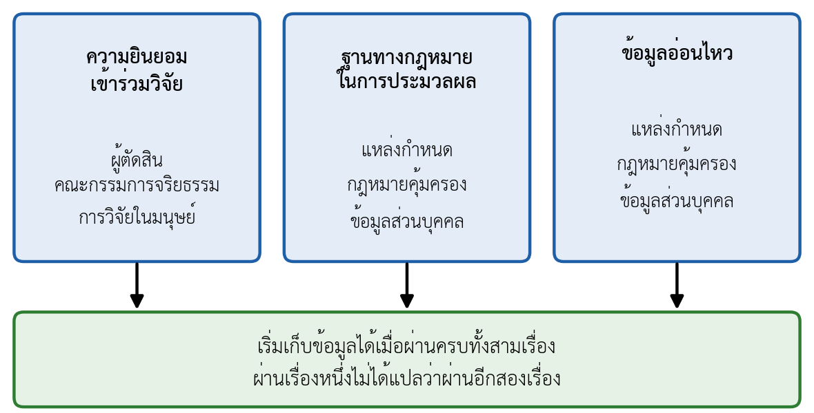
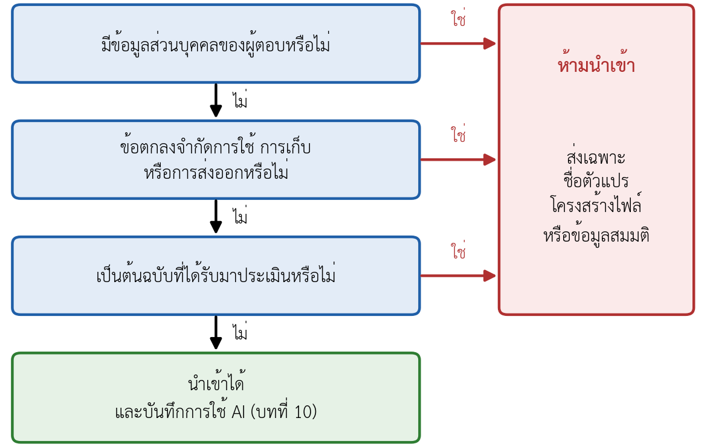

บทที่ 6 จริยธรรมการวิจัย ข้อมูลส่วนบุคคล และข้อตกลงการใช้ข้อมูล
เมื่อศึกษาบทนี้จบแล้ว นิสิตสามารถ
- อธิบายความต่างระหว่างความยินยอมเข้าร่วมวิจัย ฐานทางกฎหมายในการประมวลผลข้อมูลส่วนบุคคล และการจัดการข้อมูลอ่อนไหวได้
- ระบุข้อมูลส่วนบุคคลที่งานของตนเก็บ และจัดทำแผนเก็บเท่าที่จำเป็นพร้อมการแยกตัวระบุได้
- วิเคราะห์ข้อตกลงการใช้ข้อมูลทุติยภูมิ และสรุปว่าเก็บไฟล์ที่ใด ใครใช้ได้ และส่งออกอะไรได้
- จำแนกไฟล์ในโครงการของตนว่าไฟล์ใดนำเข้าเครื่องมือ AI ภายนอกได้และไฟล์ใดห้ามได้
- จัดทำเอกสารยื่นคณะกรรมการจริยธรรมและแผนคุ้มครองข้อมูลของโครงการตนเองได้ (ใบงานที่ 6)
ความนำ
บทที่ 1 ให้นิสิตเขียนหัวข้อนโยบายข้อมูลไว้ในแผนจัดการข้อมูล และบอกว่ารายละเอียดด้านกฎหมายและจริยธรรมจะกล่าวในบทที่ว่าด้วยจริยธรรม บทนี้คือบทนั้น และต้องทำให้เสร็จก่อนเก็บข้อมูลจริงในบทที่ 7 หรือก่อนเริ่มเตรียมข้อมูลในบทที่ 8
นิสิตจำนวนมากมองว่าเรื่องนี้คือการกรอกแบบฟอร์มให้ผ่าน แต่การตัดสินใจในบทนี้ย้อนกลับไปเปลี่ยนแบบสอบถาม วิธีรับสมัคร และวิธีเก็บไฟล์ได้ ตัวอย่างในบทที่ 5 คือข้อมูลอุปกรณ์ที่ใช้ตรวจบอท ซึ่งอาจเป็นข้อมูลส่วนบุคคล และรายชื่ออีเมลจากฝ่ายบุคคล ซึ่งทำให้รับสมัครได้ดีขึ้น แต่สร้างคำถามเรื่องความยินยอมและความเป็นอิสระของผู้ตอบ
บทนี้ใช้กับนิสิตทั้งสองแทร็ก นิสิตที่เก็บข้อมูลปฐมภูมิเน้นหัวข้อ 6.1 ถึง 6.4 นิสิตที่ใช้ข้อมูลทุติยภูมิเน้นหัวข้อ 6.5 และทุกคนต้องทำหัวข้อ 6.6 บทนี้มีหลายส่วนที่ผู้เขียนเสนอจากการสังเคราะห์ ส่วนข้อกำหนดทางกฎหมายสรุปจากพระราชบัญญัติและประกาศฉบับที่ลงในราชกิจจานุเบกษา
6.1 สามเรื่องที่ต้องแยกให้ออก
Michener (2015, p. 6) ให้แผนจัดการข้อมูลระบุข้อจำกัดทางกฎหมายและจริยธรรมของข้อมูลมนุษย์และข้อมูลอ่อนไหว ผู้เขียนเสนอให้นิสิตแยกข้อจำกัดเหล่านี้เป็นสามเรื่องตามตารางที่ 6.1 เพราะแต่ละเรื่องมีผู้ตัดสินและเอกสารต่างกัน การผ่านเรื่องหนึ่งไม่ได้ทำให้อีกสองเรื่องผ่านไปด้วย
ตารางที่ 6.1 สามเรื่องที่ต้องแยกเมื่อเก็บข้อมูลจากมนุษย์ (ผู้เขียนเสนอ)
| เรื่อง | คำถามที่ต้องตอบ | ผู้ตัดสินหรือแหล่งกำหนด | เอกสารของนิสิต |
|---|---|---|---|
| ความยินยอมเข้าร่วมวิจัย (informed consent) | ผู้ตอบรู้หรือไม่ว่าเข้าร่วมอะไร มีความเสี่ยงอะไร และถอนตัวได้อย่างไร | คณะกรรมการจริยธรรมการวิจัยในคน ตามระเบียบมหาวิทยาลัยมหาสารคาม ว่าด้วย ข้อกำหนดการวิจัยในคน พ.ศ. 2562 | เอกสารชี้แจงและแบบแสดงความยินยอม |
| ฐานทางกฎหมาย (lawful basis) ในการประมวลผลข้อมูลส่วนบุคคล | ผู้วิจัยมีสิทธิ์ตามกฎหมายในการเก็บ ใช้ และเก็บรักษาข้อมูลส่วนบุคคลนี้ด้วยฐานใด | พระราชบัญญัติคุ้มครองข้อมูลส่วนบุคคล พ.ศ. 2562 มาตรา 19 และมาตรา 24 (1) | คำชี้แจงฐานทางกฎหมายและมาตรการคุ้มครอง |
| ข้อมูลอ่อนไหว (sensitive data) | งานนี้เก็บข้อมูลประเภทที่กฎหมายกำหนดให้คุ้มครองเข้มขึ้นหรือไม่ ถ้าเก็บ จำเป็นจริงหรือไม่ | พระราชบัญญัติคุ้มครองข้อมูลส่วนบุคคล พ.ศ. 2562 มาตรา 26 | รายการข้อมูลอ่อนไหวและเหตุผลที่ต้องเก็บ |
ที่มา ผู้เขียนเสนอจากกฎข้อที่ 7 ใน Michener (2015, p. 6)
ภาพที่ 6.1 แสดงหลักเดียวกันในรูปที่จำง่าย นิสิตเริ่มเก็บข้อมูลได้เมื่อผ่านครบทั้งสามเรื่อง

ที่มา ผู้เขียนเสนอ สรุปจากตารางที่ 6.1
ความเข้าใจผิดที่พบบ่อยคือคิดว่าแบบแสดงความยินยอมเข้าร่วมวิจัยคือฐานทางกฎหมายในการประมวลผลข้อมูลส่วนบุคคลไปด้วย สองเรื่องนี้อาจใช้เอกสารชุดเดียวกันได้ แต่ต้องตอบคนละคำถาม คณะกรรมการคุ้มครองข้อมูลส่วนบุคคลออกประกาศเรื่องมาตรการที่เหมาะสมสำหรับการเก็บรวบรวมข้อมูลส่วนบุคคลเพื่อให้บรรลุวัตถุประสงค์ที่เกี่ยวกับการศึกษาวิจัยหรือสถิติ พ.ศ. 2566 ซึ่งเกี่ยวกับเรื่องนี้โดยตรง
ตามพระราชบัญญัติ มาตรา 19 ถ้าใช้ความยินยอมเป็นฐาน ต้องขอโดยชัดแจ้ง เป็นหนังสือหรือผ่านระบบอิเล็กทรอนิกส์ เว้นแต่โดยสภาพไม่อาจขอด้วยวิธีดังกล่าวได้ และต้องแจ้งวัตถุประสงค์ไปด้วย มาตรา 24 (1) ให้เก็บข้อมูลส่วนบุคคลเพื่อการศึกษาวิจัยหรือสถิติได้โดยไม่ต้องขอความยินยอมตามกฎหมาย เมื่อจัดให้มีมาตรการปกป้องที่เหมาะสมเพื่อคุ้มครองสิทธิและเสรีภาพของเจ้าของข้อมูลส่วนบุคคลตามที่คณะกรรมการประกาศกำหนด ส่วนข้อมูลอ่อนไหวตามมาตรา 26 ได้แก่ เชื้อชาติ เผ่าพันธุ์ ความคิดเห็นทางการเมือง ความเชื่อในลัทธิ ศาสนาหรือปรัชญา พฤติกรรมทางเพศ ประวัติอาชญากรรม ข้อมูลสุขภาพ ความพิการ ข้อมูลสหภาพแรงงาน ข้อมูลพันธุกรรม ข้อมูลชีวภาพ และข้อมูลอื่นที่กระทบต่อเจ้าของข้อมูลในทำนองเดียวกันตามที่คณะกรรมการประกาศกำหนด การเก็บข้อมูลกลุ่มนี้ต้องได้รับความยินยอมโดยชัดแจ้ง เว้นแต่เข้าข้อยกเว้น ซึ่งรวมถึงกรณีที่จำเป็นในการปฏิบัติตามกฎหมายเพื่อการศึกษาวิจัยทางวิทยาศาสตร์ ประวัติศาสตร์ หรือสถิติ หรือประโยชน์สาธารณะอื่นตามมาตรา 26 (5) (ง) ซึ่งต้องทำเพียงเท่าที่จำเป็นและมีมาตรการที่เหมาะสมตามที่คณะกรรมการประกาศกำหนด
ประกาศ พ.ศ. 2566 กำหนดมาตรการสำหรับสองกรณีนี้ สาระที่นิสิตต้องรู้มีสามข้อ
- ข้อ 4 ใช้กับการเก็บตามมาตรา 24 (1) ผู้ควบคุมข้อมูลต้องมีมาตรการเชิงองค์กรและเชิงเทคนิคให้เก็บเท่าที่จำเป็นต่อการวิจัย มีมาตรการรักษาความมั่นคงปลอดภัย และกำกับให้การเก็บเป็นไปตามมาตรฐานทางจริยธรรม โดยอาจทำให้ข้อมูลไม่สามารถระบุตัวบุคคลได้ แฝงข้อมูล (pseudonymization) หรือเข้ารหัสข้อมูล (encryption) เพื่อลดความเสี่ยง
- ข้อ 5 ใช้กับข้อมูลอ่อนไหวตามมาตรา 26 (5) (ง) ผู้ควบคุมข้อมูลต้องพิจารณาก่อนว่าการเก็บจำเป็นจริง แล้วมีมาตรการทำนองเดียวกับข้อ 4 และข้อ 5 (4) กำหนดให้คณะกรรมการจริยธรรมการศึกษาวิจัยในคนพิจารณาอนุมัติหรือรับรองก่อนเริ่มการศึกษาวิจัย
- ข้อ 6 (1) แม้การวิจัยได้รับยกเว้นไม่ต้องขอความยินยอมตามกฎหมาย ผู้วิจัยยังต้องขอความยินยอมเข้าร่วมวิจัยจากผู้เข้าร่วม เว้นแต่เข้ากรณียกเว้นสามกรณีที่ประกาศกำหนด
สาระข้อที่ 3 ยืนยันว่าความยินยอมสองแบบเป็นคนละเรื่องกัน สาระข้างต้นสรุปจากฉบับในราชกิจจานุเบกษา เมื่อต้องอ้างในเอกสารทางการ ให้ยกถ้อยคำจากฉบับเต็ม ไม่ใช้ถ้อยคำสรุปในบทนี้
6.2 การยื่นคณะกรรมการจริยธรรมการวิจัยในมนุษย์
งานวิจัยที่เก็บข้อมูลจากมนุษย์ต้องยื่นคณะกรรมการจริยธรรมการวิจัยในมนุษย์ตามระเบียบของมหาวิทยาลัย สำหรับมหาวิทยาลัยมหาสารคาม คือ ระเบียบมหาวิทยาลัยมหาสารคาม ว่าด้วย ข้อกำหนดการวิจัยในคน พ.ศ. 2562 ซึ่งนับการสอบถามและการสัมภาษณ์ทางสังคมศาสตร์เป็นการวิจัยในคน (ข้อ 3) คณะกรรมการจริยธรรมการวิจัยในคน มหาวิทยาลัยมหาสารคาม พิจารณาโครงการสามแบบ คือ แบบยกเว้น (exemption review) แบบเร่งรัด (expedited) และแบบกรรมการเต็มชุด (full board review) และมีแบบฟอร์มให้ดาวน์โหลดจากเว็บไซต์ของคณะกรรมการ (คณะกรรมการจริยธรรมการวิจัยในคน มหาวิทยาลัยมหาสารคาม, ม.ป.ป.) ผู้เขียนเสนอให้นิสิตเตรียมเอกสารจากผลงานของบทก่อนหน้า เพราะคณะกรรมการต้องเห็นสิ่งเดียวกับที่นิสิตจะทำจริง ได้แก่
- แบบสอบถามฉบับร่างจากใบงานที่ 5 รวมช่องปลายเปิดและคำถามตรวจทุกข้อ
- วิธีรับสมัครและกรอบการสุ่มจากใบงานที่ 5 ระบุว่าใครเป็นผู้ส่งคำเชิญ
- รายการข้อมูลที่ระบบเก็บโดยผู้ตอบไม่ต้องกรอก เช่น เวลาตอบและข้อมูลอุปกรณ์ตามตารางที่ 5.2
- แผนจัดการข้อมูลจากใบงานที่ 1 โดยเฉพาะที่เก็บไฟล์ ผู้เข้าถึง และระยะเวลาเก็บรักษา
- เอกสารชี้แจงและแบบแสดงความยินยอม
ข้อ 3 เป็นจุดที่ถูกมองข้ามบ่อย ผู้ตอบอาจไม่รู้ว่าระบบเก็บข้อมูลเหล่านี้ เอกสารชี้แจงจึงควรบอกว่าเก็บอะไรและใช้ทำอะไร ถ้าแผนเปลี่ยนหลังได้รับอนุมัติ เช่น เพิ่มข้อคำถามหลังการทดลองใช้ในบทที่ 7 นิสิตต้องตรวจกับระเบียบว่าต้องแจ้งคณะกรรมการหรือไม่ และบันทึกในบันทึกการแก้แผนจากบทที่ 3
6.3 ข้อมูลส่วนบุคคลในงานวิจัย
6.3.1 เก็บเท่าที่จำเป็น
ผู้เขียนเสนอให้นิสิตเขียนรายการข้อมูลส่วนบุคคลทุกรายการที่งานเก็บ แล้วถามทีละรายการว่าใช้ตอบคำถามวิจัยข้อใด รายการที่ตอบไม่ได้ให้ตัดออก ตัวอย่างเช่น อายุอาจจำเป็นเป็นตัวแปรควบคุม แต่วันเดือนปีเกิดไม่จำเป็น ช่วงอายุอาจพอแทนอายุเป็นปี ชื่อและอีเมลไม่จำเป็นต่อการวิเคราะห์ ยกเว้นการออกแบบที่ต้องเชื่อมข้อมูลหลายช่วงเวลาหรือหลายแหล่ง
6.3.2 แยกตัวระบุออกจากคำตอบ
ถ้าการออกแบบต้องเชื่อมข้อมูล เช่น การแยกการวัดเป็นสองช่วงเวลาตามบทที่ 5 ผู้เขียนเสนอให้ใช้รหัสแทนชื่อในไฟล์คำตอบ และเก็บตารางจับคู่รหัสกับตัวระบุ (identifier) แยกไว้ในที่ที่จำกัดผู้เข้าถึง เมื่อเชื่อมข้อมูลเสร็จและไม่จำเป็นต้องใช้ตารางจับคู่อีก ให้ทำตามแผนที่เขียนไว้ว่าจะทำลายหรือเก็บต่อ วิธีนี้เป็นการแฝงข้อมูลตามที่ประกาศ พ.ศ. 2566 ข้อ 4 ให้พิจารณา ส่วนระยะเวลาเก็บรักษา ประกาศฉบับนี้ไม่ได้กำหนดไว้ ผู้เขียนเสนอให้ระบุระยะเวลาเก็บรักษาและวิธีลบหรือทำลายข้อมูลไว้ในแบบเสนอโครงการที่ยื่นคณะกรรมการจริยธรรม แล้วทำตามที่คณะกรรมการอนุมัติ
6.3.3 การตัดตัวระบุอาจไม่พอ
การลบชื่อออกไม่ได้ทำให้ข้อมูลระบุตัวไม่ได้เสมอ Hox และ Boeije (2005, p. 598) อธิบายว่าผู้ผลิตข้อมูลบางครั้งต้องปรับข้อมูลก่อนเผยแพร่เพื่อปกป้องความลับของผู้ตอบ เพราะการรวมข้อมูลหลายตัวแปรของบุคคลเดียวอาจระบุตัวบุคคลได้ ในงานภายในองค์การ ฝ่าย ตำแหน่ง อายุงาน และเพศ เมื่อรวมกันอาจชี้ไปที่พนักงานคนเดียวได้ โดยเฉพาะฝ่ายที่มีคนน้อย ผลข้อนี้ใช้ทั้งกับไฟล์ข้อมูลและกับตารางในวิทยานิพนธ์ ตารางที่แยกกลุ่มย่อยจนเหลือไม่กี่คนอาจเปิดเผยคำตอบของคนในกลุ่มนั้น
6.4 การเก็บข้อมูลในองค์การ
งานวิทยานิพนธ์บริหารธุรกิจจำนวนมากเก็บข้อมูลจากพนักงานโดยได้รับความร่วมมือจากองค์การ ผู้เขียนเสนอประเด็นที่นิสิตต้องตกลงกับองค์การเป็นลายลักษณ์อักษรก่อนเก็บข้อมูล ตามตารางที่ 6.2
ตารางที่ 6.2 ประเด็นที่ต้องตกลงกับองค์การก่อนเก็บข้อมูล (ผู้เขียนเสนอ)
| ประเด็น | เหตุผล | สิ่งที่ควรตกลง |
|---|---|---|
| ใครเห็นคำตอบรายบุคคล | ผู้ตอบอาจไม่ตอบตามจริงถ้าคิดว่าองค์การเห็น | องค์การได้รับเฉพาะผลรวม ไม่ได้รับไฟล์รายบุคคล |
| การเชื่อมกับข้อมูลขององค์การ | การเชื่อมกับผลประเมินหรือข้อมูลบุคคลขยายขอบเขตข้อมูลส่วนบุคคล | ถ้าจำเป็นต่อคำถามวิจัย ให้ระบุในเอกสารยื่นคณะกรรมการจริยธรรมและเอกสารชี้แจงผู้ตอบ |
| ความสมัครใจ | คำเชิญจากองค์การอาจทำให้ผู้ตอบรู้สึกว่าต้องตอบ | คำเชิญระบุชัดว่าไม่ตอบได้โดยไม่มีผลต่อการทำงาน |
| การส่งรายชื่อให้ผู้วิจัย | รายชื่ออีเมลเป็นข้อมูลส่วนบุคคล | ตรวจว่าองค์การส่งรายชื่อให้ได้หรือไม่ หรือให้องค์การเป็นผู้ส่งลิงก์แทน |
| ตารางผลที่ส่งคืนองค์การ | กลุ่มย่อยเล็กอาจระบุตัวได้ (Hox & Boeije, 2005, p. 598) | กำหนดขนาดกลุ่มย่อยต่ำสุดที่จะรายงาน |
ที่มา ผู้เขียนเสนอ
ประเด็นที่สองต้องระวังเป็นพิเศษ การเชื่อมคำตอบของพนักงานกับผลประเมินการปฏิบัติงานอาจทำให้คำถามวิจัยดีขึ้น เพราะได้ตัวแปรจากแหล่งที่สองตามหัวข้อ 5.1 แต่ต้องใช้ตัวระบุของพนักงาน และองค์การต้องส่งข้อมูลผลประเมินให้ผู้วิจัย ผู้เขียนเสนอให้นิสิตชั่งประโยชน์ทางวิชาการกับความเสี่ยงต่อผู้ตอบ และเขียนเหตุผลให้คณะกรรมการจริยธรรมพิจารณา ไม่ตัดสินเองเพียงเพราะองค์การยินยอม
6.5 ข้อตกลงการใช้ข้อมูลทุติยภูมิ
ข้อมูลทุติยภูมิไม่มีขั้นขอความยินยอมจากผู้ให้ข้อมูล สิทธิ์ในการใช้มาจากข้อตกลงการใช้ข้อมูล (data use agreement) หรือสัญญาอนุญาตใช้ข้อมูล (license) ตามที่กล่าวในบทที่ 1 Michener (2015, p. 3) ระบุว่าผู้ประเมินแผนจัดการข้อมูลสนใจว่าข้อมูลเป็นกรรมสิทธิ์ (proprietary) หรือมีข้อจำกัดการใช้และการเผยแพร่ต่อหรือไม่ Hox และ Boeije (2005, p. 597) อธิบายว่าคลังข้อมูลแต่ละแห่งกำหนดเงื่อนไขการให้ข้อมูลต่างกัน บางชุดใช้ได้เฉพาะผู้ขอ การใช้สอนในชั้นมักต้องขออนุญาตเพิ่ม และบางกรณีผู้ขอต้องแจ้งจุดประสงค์ต่อผู้เก็บข้อมูลเดิม
ผู้เขียนเสนอให้นิสิตอ่านข้อตกลงก่อนเปิดไฟล์ข้อมูลครั้งแรก แล้วสรุปตามตารางที่ 6.3
ตารางที่ 6.3 สรุปข้อตกลงการใช้ข้อมูลทุติยภูมิ (ผู้เขียนเสนอ)
| คำถาม | ตัวอย่างคำตอบ |
|---|---|
| ประเภทการเข้าถึง | เปิด ลงทะเบียน หรือต้องขอสิทธิ์ |
| ใครใช้ได้ | เฉพาะผู้ขอ หรือทุกคนในโครงการ อาจารย์ที่ปรึกษาเปิดไฟล์ได้หรือไม่ |
| เก็บไฟล์ที่ใดได้ | เฉพาะเครื่องของมหาวิทยาลัย หรือบริการเก็บไฟล์ออนไลน์ได้ |
| ส่งออกอะไรได้ | ผลรวมเท่านั้น หรือข้อมูลรายหน่วยได้ |
| ข้อกำหนดเรื่องขนาดกลุ่มย่อย | มีเกณฑ์จำนวนต่ำสุดต่อช่องของตารางหรือไม่ |
| แบ่งปันข้อมูลหลังจบได้หรือไม่ | วางไฟล์ในคลังสาธารณะได้หรือไม่ ถ้าไม่ได้ จะให้ผู้อื่นทำซ้ำผลได้อย่างไร |
| การอ้างอิงและการแจ้งผลงาน | ต้องอ้างชุดข้อมูลแบบใด ต้องแจ้งผู้ให้ข้อมูลเมื่อตีพิมพ์หรือไม่ |
| วันหมดอายุของสิทธิ์ | ต้องลบไฟล์เมื่อใด |
ที่มา ผู้เขียนเสนอ ปรับจาก Michener (2015, pp. 3, 6) และ Hox and Boeije (2005, p. 597)
คำถามแถวที่หกเชื่อมกับบทที่ 9 และบทที่ 10 ถ้าข้อตกลงไม่ยอมให้วางข้อมูลในคลังสาธารณะ นิสิตยังทำงานให้ผู้อื่นทำซ้ำได้ด้วยการเผยแพร่โค้ดเตรียมข้อมูลและคำอธิบายวิธีขอข้อมูล โดยไม่เผยแพร่ตัวข้อมูล
6.6 ข้อมูลกับเครื่องมือ AI ภายนอก
เครื่องมือ AI ภายนอก (external AI tool) ในบทนี้หมายถึงบริการที่ส่งข้อความหรือไฟล์ออกจากเครื่องของนิสิตไปประมวลผลที่เครื่องของผู้ให้บริการ ผู้เขียนเสนอว่าข้อมูลสามประเภทห้ามนำเข้าเครื่องมือเหล่านี้
- ข้อมูลส่วนบุคคลของผู้ตอบ
- ข้อมูลภายใต้ข้อตกลงที่จำกัดการใช้ การเก็บ หรือการส่งออก
- ต้นฉบับบทความหรือข้อเสนอโครงการที่นิสิตได้รับมาเพื่อประเมิน
เหตุผลของข้อ 1 และข้อ 2 คือการอัปโหลดเป็นการส่งข้อมูลไปเก็บที่อื่น ซึ่งข้อตกลงหรือเอกสารชี้แจงผู้ตอบมักไม่ได้ครอบคลุม และเมื่อข้อมูลออกนอกเครื่องไปแล้วจะเรียกคืนไม่ได้ สำนักพิมพ์บางแห่งมีนโยบายห้ามผู้ประเมินอัปโหลดต้นฉบับเข้าเครื่องมือ AI เช่น Elsevier ระบุว่าผู้ประเมินไม่ควรอัปโหลดต้นฉบับที่ได้รับมาประเมินหรือส่วนใดของต้นฉบับเข้าเครื่องมือ AI (Elsevier, 2026) ภาพที่ 6.2 เป็นขั้นตัดสินที่ผู้เขียนเสนอให้นิสิตใช้กับทุกไฟล์ก่อนนำเข้าเครื่องมือ AI

ที่มา ผู้เขียนเสนอ
ทางเลือกเมื่อไฟล์ห้ามนำเข้า คือส่งเฉพาะสิ่งที่ไม่ใช่ข้อมูล เช่น ชื่อตัวแปร ชนิดข้อมูล และคำอธิบายโครงสร้างไฟล์ หรือสร้างข้อมูลสมมติที่มีโครงสร้างเดียวกันแต่ค่าไม่ได้มาจากข้อมูลจริง แล้วให้เครื่องมือช่วยเขียนโค้ดจากสิ่งเหล่านั้น จากนั้นนิสิตนำโค้ดมารันกับข้อมูลจริงในเครื่องของตนเอง บทที่ 10 จะกล่าวถึงการบันทึกการใช้ AI แบบนี้
6.7 ข้อผิดพลาดที่พบบ่อย
ตารางที่ 6.4 ข้อผิดพลาดที่พบบ่อยและวิธีแก้
| ข้อผิดพลาด | ตัวอย่าง | วิธีแก้ |
|---|---|---|
| คิดว่าผ่านคณะกรรมการจริยธรรมแล้วไม่ต้องคิดเรื่องข้อมูลส่วนบุคคล | ไม่เขียนฐานทางกฎหมายและมาตรการคุ้มครอง | แยกสามเรื่องตามตารางที่ 6.1 |
| เก็บข้อมูลส่วนบุคคลเกินจำเป็น | ถามวันเดือนปีเกิด ทั้งที่ใช้เพียงช่วงอายุ | ทำรายการและตัดรายการที่ไม่ได้ใช้ตอบคำถามวิจัย |
| เก็บชื่อไว้ในไฟล์เดียวกับคำตอบ | ไฟล์วิเคราะห์มีคอลัมน์ชื่อพนักงาน | ใช้รหัสแทน และเก็บตารางจับคู่แยก |
| รายงานกลุ่มย่อยที่เล็กเกินไป | ตารางผลแยกตามฝ่ายที่มีพนักงานสามคน | กำหนดขนาดกลุ่มย่อยต่ำสุดก่อนรายงาน (Hox & Boeije, 2005, p. 598) |
| ดาวน์โหลดข้อมูลแล้วเริ่มวิเคราะห์ก่อนอ่านข้อตกลง | เก็บไฟล์ในบริการออนไลน์ที่ข้อตกลงไม่อนุญาต | สรุปข้อตกลงตามตารางที่ 6.3 ก่อนเปิดไฟล์ |
| อัปโหลดไฟล์ข้อมูลเข้าเครื่องมือ AI ภายนอก | ให้ AI ช่วยเขียนโค้ดโดยแนบไฟล์ข้อมูลจริง | ใช้ภาพที่ 6.2 และส่งเฉพาะโครงสร้างหรือข้อมูลสมมติ |
| ไม่แจ้งการเปลี่ยนแผนหลังได้รับอนุมัติ | เพิ่มข้อคำถามหลังการทดลองใช้ | ตรวจระเบียบและบันทึกในบันทึกการแก้แผน |
ฝ่ายบุคคลขอให้แบบสอบถามของปริมเก็บชื่อพนักงาน เพื่อนำผลไปเทียบกับผลประเมินการปฏิบัติงาน ปริมผ่านคณะกรรมการจริยธรรมการวิจัยในมนุษย์แล้ว จึงคิดว่าไม่ต้องคิดเรื่องกฎหมายคุ้มครองข้อมูลส่วนบุคคลอีก
ธามอยากอัปโหลดไฟล์ข้อมูลรายบริษัททั้งไฟล์เข้าเครื่องมือ AI ออนไลน์ เพื่อให้ช่วยเขียนโค้ดเตรียมข้อมูล ข้อตกลงการใช้ฐานข้อมูลของคณะไม่อนุญาตให้เผยแพร่ข้อมูลรายบริษัทต่อ
คำถามชวนคิด ความคิดของปริมผิดตรงไหนตามตารางที่ 6.1 คำขอของฝ่ายบุคคลมีประเด็นใดในตารางที่ 6.2 และปริมควรตอบฝ่ายบุคคลอย่างไร ส่วนธามควรทำอย่างไรจึงได้ความช่วยเหลือจากเครื่องมือ AI โดยไม่ขัดข้อตกลง
เมื่อศึกษาบทนี้แล้ว นิสิตสามารถแยกความยินยอมเข้าร่วมวิจัย ฐานทางกฎหมายในการประมวลผลข้อมูลส่วนบุคคล และการจัดการข้อมูลอ่อนไหวออกจากกัน และรู้ว่าการผ่านเรื่องหนึ่งไม่ได้ทำให้อีกสองเรื่องผ่านไปด้วย นิสิตทำรายการข้อมูลส่วนบุคคลที่งานเก็บ ตัดรายการที่ไม่จำเป็น และแยกตัวระบุออกจากคำตอบ โดยเข้าใจว่าการลบชื่ออย่างเดียวอาจไม่พอ เพราะข้อมูลหลายตัวแปรรวมกันอาจระบุตัวบุคคลได้
นิสิตที่เก็บข้อมูลในองค์การรู้ว่าต้องตกลงเรื่องใดกับองค์การก่อนเก็บข้อมูล นิสิตที่ใช้ข้อมูลทุติยภูมิสามารถสรุปข้อตกลงการใช้ข้อมูลว่าเก็บไฟล์ที่ใด ใครใช้ได้ และส่งออกอะไรได้ ทุกคนจำแนกได้ว่าไฟล์ใดนำเข้าเครื่องมือ AI ภายนอกได้ และมีทางเลือกเมื่อไฟล์ห้ามนำเข้า
ผลของใบงานที่ 6 คือเอกสารที่ทำให้เริ่มเก็บข้อมูลได้ นิสิตแทร็กข้อมูลปฐมภูมิจะนำแบบสอบถามไปทดลองใช้และเก็บจริงในบทที่ 7 ส่วนนิสิตแทร็กข้อมูลทุติยภูมิจะเริ่มสำรวจและประเมินชุดข้อมูลในบทที่ 8
- ความยินยอมเข้าร่วมวิจัย (informed consent)
- ฐานทางกฎหมาย (lawful basis)
- ข้อมูลส่วนบุคคล (personal data)
- ข้อมูลอ่อนไหว (sensitive data)
- ตัวระบุ (identifier)
- ความลับ (confidentiality)
- ข้อตกลงการใช้ข้อมูล (data use agreement)
- สัญญาอนุญาตใช้ข้อมูล (license)
- ข้อมูลกรรมสิทธิ์ (proprietary data)
- เครื่องมือ AI ภายนอก (external AI tool)
คำถามทบทวน
- จงอธิบายความต่างระหว่างความยินยอมเข้าร่วมวิจัยกับฐานทางกฎหมายในการประมวลผลข้อมูลส่วนบุคคล และเหตุใดการผ่านคณะกรรมการจริยธรรมจึงไม่ได้ตอบคำถามเรื่องข้อมูลส่วนบุคคลทั้งหมด
- นิสิตคนหนึ่งลบคอลัมน์ชื่อออกจากไฟล์คำตอบของพนักงาน แล้วสรุปว่าข้อมูลระบุตัวไม่ได้แล้ว จงประเมินข้อสรุปนี้ และเสนอสิ่งที่ต้องทำเพิ่ม
- องค์การเสนอส่งผลประเมินการปฏิบัติงานรายบุคคลให้นิสิตเพื่อใช้เป็นตัวแปรตาม จงวิเคราะห์ประโยชน์ทางวิชาการและความเสี่ยงต่อผู้ตอบ และระบุสิ่งที่ต้องทำก่อนรับข้อมูล
- จงเลือกชุดข้อมูลทุติยภูมิที่นิสิตใช้หรือจะใช้ แล้วตอบคำถามในตารางที่ 6.3 อย่างน้อยห้าแถว ถ้าข้อตกลงไม่ตอบแถวใด ให้ระบุว่าจะถามใคร
- จงอธิบายว่าเหตุใดการส่งเฉพาะชื่อตัวแปรหรือข้อมูลสมมติให้เครื่องมือ AI จึงต่างจากการอัปโหลดไฟล์ข้อมูลจริง และทางเลือกนี้ยังมีข้อจำกัดอะไร
ใบงานที่ 6 เอกสารจริยธรรมและแผนคุ้มครองข้อมูล
ให้นิสิตจัดทำเอกสารสำหรับโครงการวิจัยของตนเอง นิสิตแทร็กข้อมูลปฐมภูมิทำข้อ 1 ถึง 4 และข้อ 6 นิสิตแทร็กข้อมูลทุติยภูมิทำข้อ 5 และข้อ 6 ถ้าข้อมูลทุติยภูมิมีข้อมูลส่วนบุคคล ให้ทำข้อ 2 และข้อ 3 ด้วย
- ตารางที่ 6.1 ของงานตนเอง ครบสามแถว
- รายการข้อมูลส่วนบุคคลทุกรายการ พร้อมคำถามวิจัยที่ใช้ และรายการที่ตัดออก
- แผนแยกตัวระบุ ที่เก็บตารางจับคู่ ผู้เข้าถึง และวิธีจัดการหลังเชื่อมข้อมูลเสร็จ
- ร่างเอกสารยื่นคณะกรรมการจริยธรรมตามรายการในหัวข้อ 6.2 และร่างเอกสารชี้แจงพร้อมแบบแสดงความยินยอม ถ้าเก็บในองค์การ ให้แนบประเด็นที่ตกลงตามตารางที่ 6.2
- ตารางที่ 6.3 ของชุดข้อมูลที่ใช้ พร้อมสำเนาหรือที่อยู่ของข้อตกลงการใช้ข้อมูล
- รายการไฟล์ในโฟลเดอร์โครงการ จำแนกตามภาพที่ 6.2 ว่านำเข้าเครื่องมือ AI ภายนอกได้หรือห้าม และปรับหัวข้อนโยบายข้อมูลในแผนจัดการข้อมูลจากใบงานที่ 1 ให้ตรง
เอกสารอ้างอิง
วราวุฒิ นาคบุญนำ. (2569). บทที่ 6 จริยธรรมการวิจัย ข้อมูลส่วนบุคคล และข้อตกลงการใช้ข้อมูล. ใน เริ่มต้นทำวิจัย จากคำถามถึงชุดข้อมูลที่วิเคราะห์ได้. คณะการบัญชีและการจัดการ มหาวิทยาลัยมหาสารคาม. https://aj-warawut.github.io/academic-web-teaching/rs_lesson_06.html